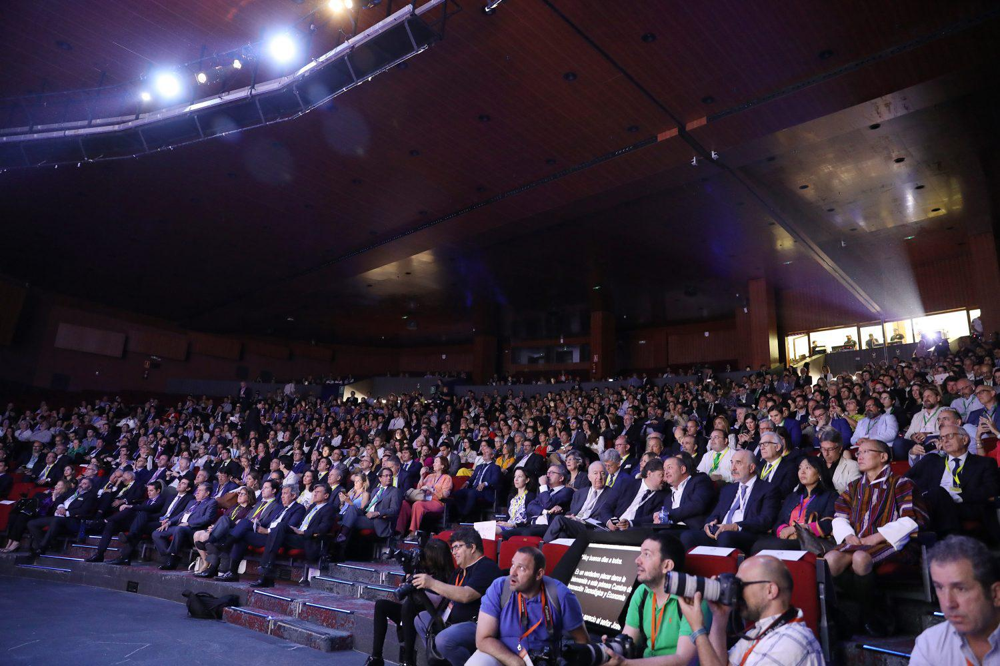
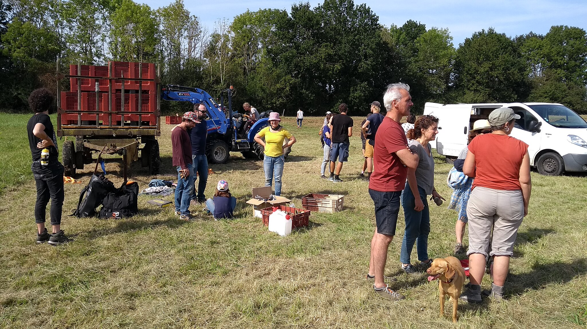

Arrenquen les Jornades d’Economia Circular 2025
Amb una gran assistència i molta il·lusió, les jornades han començat aquest matí al Centre Cívic de la Ribera. L’esdeveniment reuneix experts i ciutadania al voltant de la sostenibilitat.
“Aquestes jornades són una oportunitat per repensar el nostre model econòmic i fer-lo més respectuós amb el planeta.” – Clara Solé, ponent.
Durant tres dies s’organitzen tallers pràctics, xerrades i activitats participatives, enfocades a promoure hàbits responsables i compartir coneixement sobre economia circular.
- Tallers de reparació i reutilització
- Xerrades amb experts en sostenibilitat
- Espais de debat amb joves
- Exposicions de projectes locals
Les jornades compten amb el suport de l’Ajuntament i diverses entitats ambientals, que impulsen aquesta iniciativa per fomentar el canvi des de l’àmbit local.
Tots els continguts i les activitats són gratuïtes i obertes a tothom.